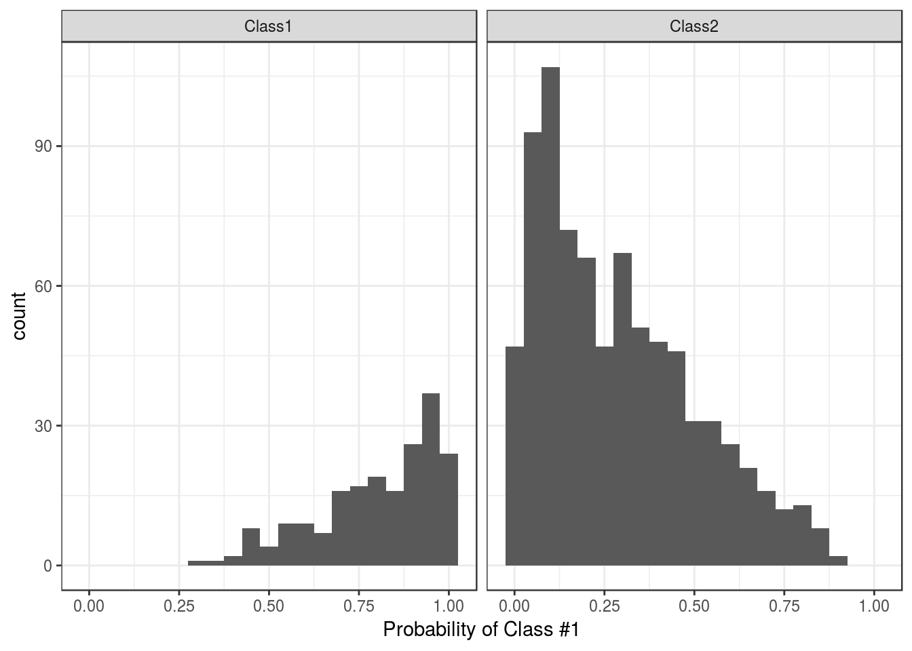
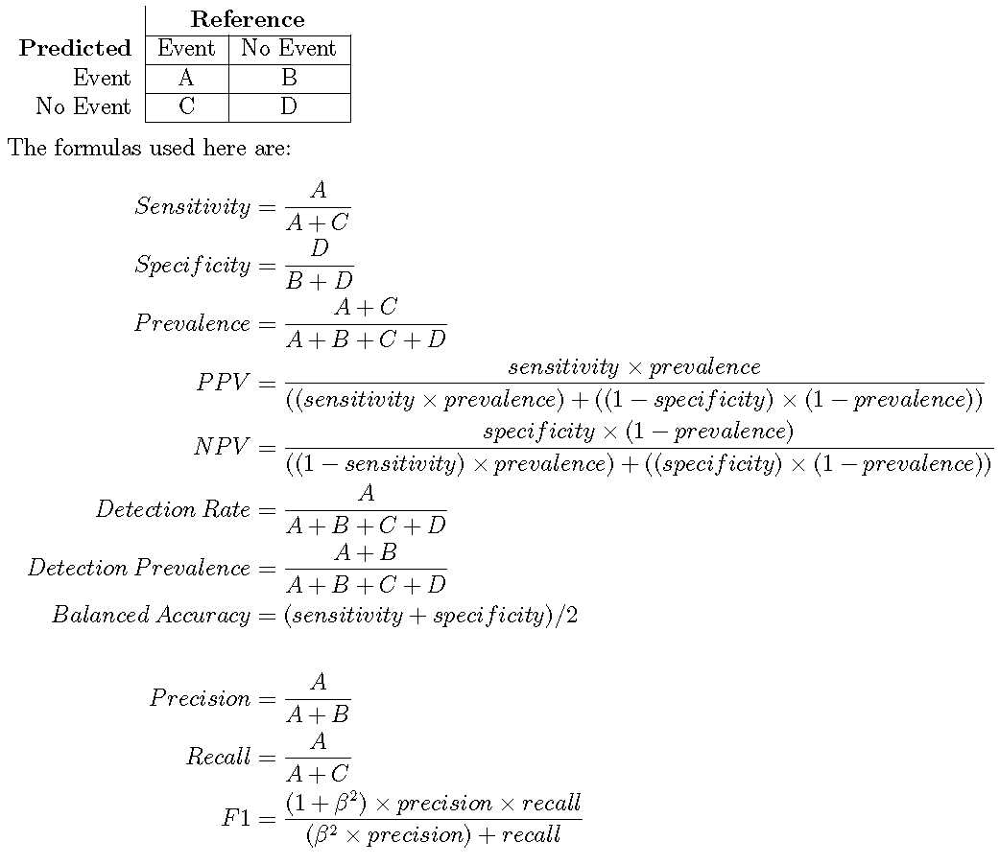
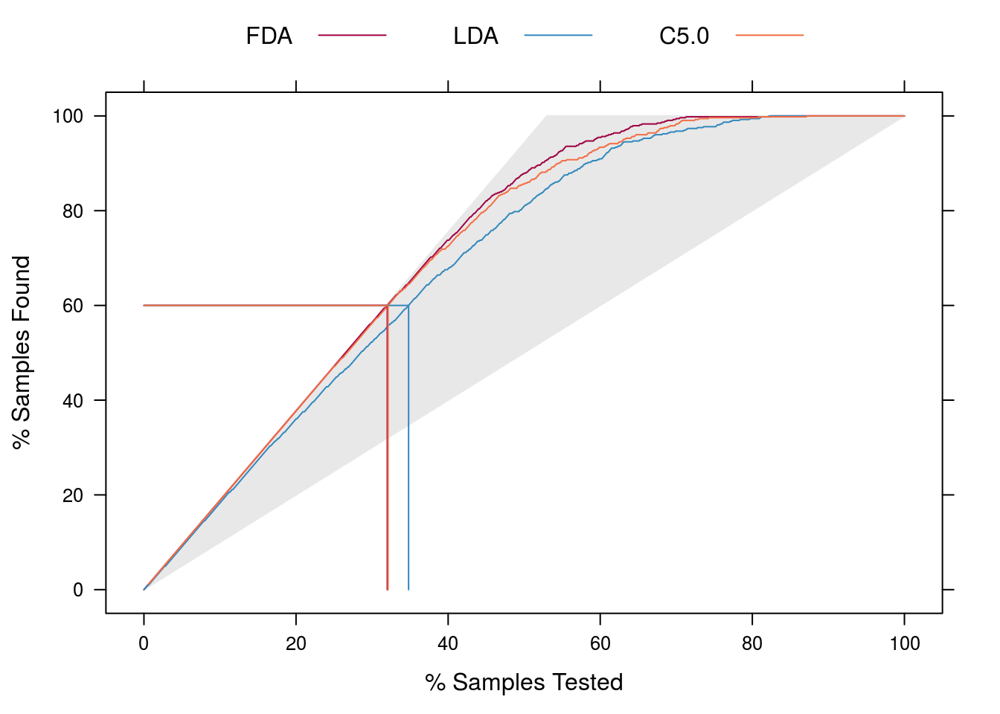
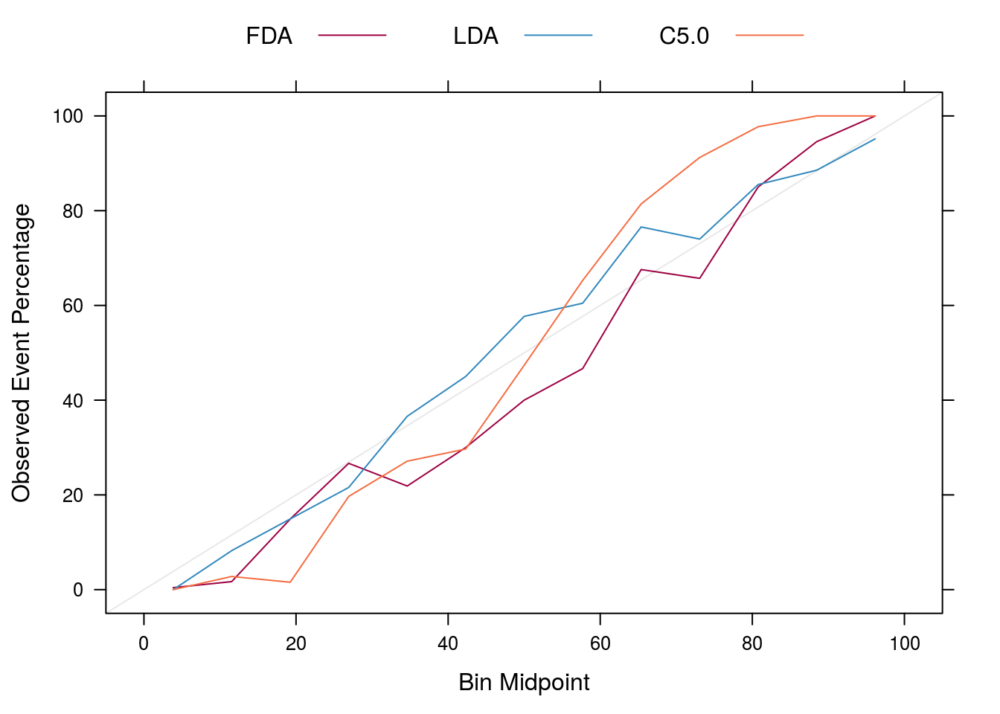
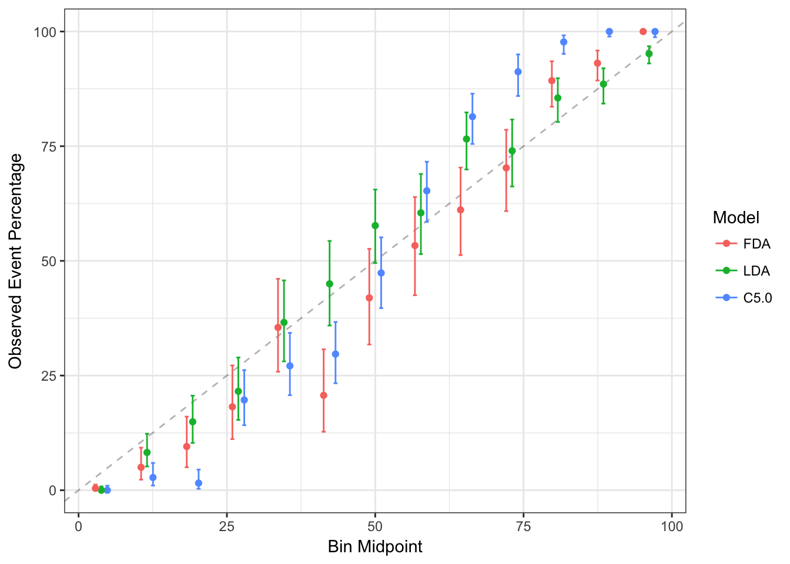

16 Measuring Performance
- Measures for Regression
- Measures for Predicted Classes
- Measures for Class Probabilities
- Lift Curves
- Calibration Curves
16.1 Measures for Regression
The function postResample can be used to estimate the root mean squared error (RMSE) and simple R2 for numeric outcomes. For example:
library(mlbench)
data(BostonHousing)
set.seed(280)
bh_index <- createDataPartition(BostonHousing$medv, p = .75, list = FALSE)
bh_tr <- BostonHousing[ bh_index, ]
bh_te <- BostonHousing[-bh_index, ]
set.seed(7279)
lm_fit <- train(medv ~ . + rm:lstat,
data = bh_tr,
method = "lm")
bh_pred <- predict(lm_fit, bh_te)
lm_fit## Linear Regression
##
## 381 samples
## 13 predictor
##
## No pre-processing
## Resampling: Bootstrapped (25 reps)
## Summary of sample sizes: 381, 381, 381, 381, 381, 381, ...
## Resampling results:
##
## RMSE Rsquared
## 4.283482 0.7894951
##
## Tuning parameter 'intercept' was held constant at a value of TRUE
## postResample(pred = bh_pred, obs = bh_te$medv)## RMSE Rsquared
## 4.4412987 0.778187716.2 Measures for Predicted Classes
Before proceeding, let’s make up some test set data:
set.seed(144)
true_class <- factor(sample(paste0("Class", 1:2),
size = 1000,
prob = c(.2, .8), replace = TRUE))
true_class <- sort(true_class)
class1_probs <- rbeta(sum(true_class == "Class1"), 4, 1)
class2_probs <- rbeta(sum(true_class == "Class2"), 1, 2.5)
test_set <- data.frame(obs = true_class,
Class1 = c(class1_probs, class2_probs))
test_set$Class2 <- 1 - test_set$Class1
test_set$pred <- factor(ifelse(test_set$Class1 >= .5, "Class1", "Class2"))We would expect that this model will do well on these data:
ggplot(test_set, aes(x = Class1)) +
geom_histogram(binwidth = .05) +
facet_wrap(~obs) +
xlab("Probability of Class #1")
Generating the predicted classes based on the typical 50% cutoff for the probabilities, we can compute the confusion matrix, which shows a cross-tabulation of the observed and predicted classes. The confusionMatrix function can be used to generate these results:
confusionMatrix(data = test_set$pred, reference = test_set$obs)## Confusion Matrix and Statistics
##
## Reference
## Prediction Class1 Class2
## Class1 183 141
## Class2 13 663
##
## Accuracy : 0.846
## 95% CI : (0.8221, 0.8678)
## No Information Rate : 0.804
## P-Value [Acc > NIR] : 0.0003424
##
## Kappa : 0.6081
## Mcnemar's Test P-Value : < 2.2e-16
##
## Sensitivity : 0.9337
## Specificity : 0.8246
## Pos Pred Value : 0.5648
## Neg Pred Value : 0.9808
## Prevalence : 0.1960
## Detection Rate : 0.1830
## Detection Prevalence : 0.3240
## Balanced Accuracy : 0.8792
##
## 'Positive' Class : Class1
## For two classes, this function assumes that the class corresponding to an event is the first class level (but this can be changed using the positive argument.
Note that there are a number of statistics shown here. The “no-information rate” is the largest proportion of the observed classes (there were more class 2 data than class 1 in this test set). A hypothesis test is also computed to evaluate whether the overall accuracy rate is greater than the rate of the largest class. Also, the prevalence of the “positive event” is computed from the data (unless passed in as an argument), the detection rate (the rate of true events also predicted to be events) and the detection prevalence (the prevalence of predicted events).
If the prevalence of the event is different than those seen in the test set, the prevalence option can be used to adjust this.
Suppose a 2x2 table:

When there are three or more classes, confusionMatrix will show the confusion matrix and a set of “one-versus-all” results. For example, in a three class problem, the sensitivity of the first class is calculated against all the samples in the second and third classes (and so on).
The confusionMatrix matrix frames the errors in terms of sensitivity and specificity. In the case of information retrieval, the precision and recall might be more appropriate. In this case, the option mode can be used to get those statistics:
confusionMatrix(data = test_set$pred, reference = test_set$obs, mode = "prec_recall")## Confusion Matrix and Statistics
##
## Reference
## Prediction Class1 Class2
## Class1 183 141
## Class2 13 663
##
## Accuracy : 0.846
## 95% CI : (0.8221, 0.8678)
## No Information Rate : 0.804
## P-Value [Acc > NIR] : 0.0003424
##
## Kappa : 0.6081
## Mcnemar's Test P-Value : < 2.2e-16
##
## Precision : 0.5648
## Recall : 0.9337
## F1 : 0.7038
## Prevalence : 0.1960
## Detection Rate : 0.1830
## Detection Prevalence : 0.3240
## Balanced Accuracy : 0.8792
##
## 'Positive' Class : Class1
## Again, the positive argument can be used to control which factor level is associated with a “found” or “important” document or sample.
There are individual functions called sensitivity, specificity, posPredValue, negPredValue, precision, recall, and F_meas.
Also, a resampled estimate of the training set can also be obtained using confusionMatrix.train. For each resampling iteration, a confusion matrix is created from the hold-out samples and these values can be aggregated to diagnose issues with the model fit.
These values are the percentages that hold-out samples landed in the confusion matrix during resampling. There are several methods for normalizing these values. See ?confusionMatrix.train for details.
The default performance function used by train is postResample, which generates the accuracy and Kappa statistics:
postResample(pred = test_set$pred, obs = test_set$obs)## Accuracy Kappa
## 0.8460000 0.6081345As shown below, another function called twoClassSummary can be used to get the sensitivity and specificity using the default probability cutoff. Another function, multiClassSummary, can do similar calculations when there are three or more classes but both require class probabilities for each class.
16.3 Measures for Class Probabilities
For data with two classes, there are specialized functions for measuring model performance. First, the twoClassSummary function computes the area under the ROC curve and the specificity and sensitivity under the 50% cutoff. Note that:
- this function uses the first class level to define the “event” of interest. To change this, use the
levoption to the function - there must be columns in the data for each of the class probabilities (named the same as the outcome’s class levels)
twoClassSummary(test_set, lev = levels(test_set$obs))## ROC Sens Spec
## 0.9560044 0.9336735 0.8246269A similar function can be used to get the analugous precision-recall values and the area under the precision-recall curve:
prSummary(test_set, lev = levels(test_set$obs))## AUC Precision Recall F
## 0.8582695 0.5648148 0.9336735 0.7038462This function requires that the MLmetrics package is installed.
For multi-class problems, there are additional functions that can be used to calculate performance. One, mnLogLoss computes the negative of the multinomial log-likelihood (smaller is better) based on the class probabilities. This can be used to optimize tuning parameters but can lead to results that are inconsistent with other measures (e.g. accuracy or the area under the ROC curve), especially when the other measures are near their best possible values. The function has similar arguments to the other functions described above. Here is the two-class data from above:
mnLogLoss(test_set, lev = levels(test_set$obs))## logLoss
## 0.370626Additionally, the function multiClassSummary computes a number of relevant metrics:
- the overall accuracy and Kappa statistics using the predicted classes
- the negative of the multinomial log loss (if class probabilities are available)
- averages of the “one versus all” statistics such as sensitivity, specificity, the area under the ROC curve, etc.
16.4 Lift Curves
The lift function can be used to evaluate probabilities thresholds that can capture a certain percentage of hits. The function requires a set of sample probability predictions (not from the training set) and the true class labels. For example, we can simulate two-class samples using the twoClassSim function and fit a set of models to the training set:
set.seed(2)
lift_training <- twoClassSim(1000)
lift_testing <- twoClassSim(1000)
ctrl <- trainControl(method = "cv", classProbs = TRUE,
summaryFunction = twoClassSummary)
set.seed(1045)
fda_lift <- train(Class ~ ., data = lift_training,
method = "fda", metric = "ROC",
tuneLength = 20,
trControl = ctrl)
set.seed(1045)
lda_lift <- train(Class ~ ., data = lift_training,
method = "lda", metric = "ROC",
trControl = ctrl)
set.seed(1045)
c5_lift <- train(Class ~ ., data = lift_training,
method = "C5.0", metric = "ROC",
tuneLength = 10,
trControl = ctrl,
control = C5.0Control(earlyStopping = FALSE))
## Generate the test set results
lift_results <- data.frame(Class = lift_testing$Class)
lift_results$FDA <- predict(fda_lift, lift_testing, type = "prob")[,"Class1"]
lift_results$LDA <- predict(lda_lift, lift_testing, type = "prob")[,"Class1"]
lift_results$C5.0 <- predict(c5_lift, lift_testing, type = "prob")[,"Class1"]
head(lift_results)## Class FDA LDA C5.0
## 1 Class1 0.99244077 0.8838205 0.8445830
## 2 Class1 0.99128497 0.7572450 0.8882418
## 3 Class1 0.82142101 0.8883830 0.5732098
## 4 Class2 0.04336463 0.0140480 0.1690251
## 5 Class1 0.77494981 0.9320695 0.4824400
## 6 Class2 0.11532541 0.0524154 0.3310495The lift function does the calculations and the corresponding plot function is used to plot the lift curve (although some call this the gain curve). The value argument creates reference lines:
trellis.par.set(caretTheme())
lift_obj <- lift(Class ~ FDA + LDA + C5.0, data = lift_results)
plot(lift_obj, values = 60, auto.key = list(columns = 3,
lines = TRUE,
points = FALSE))
From this we can see that, to find 60 percent of the hits, a little more than 30 percent of the data can be sampled (when ordered by the probability predictions). The LDA model does somewhat worse than the other two models.
16.5 Calibration Curves
Calibration curves can be used to characterisze how consistent the predicted class probabilities are with the observed event rates.
Other functions in the gbm package, the rms package (and others) can also produce calibrartion curves. The format for the function is very similar to the lift function:
trellis.par.set(caretTheme())
cal_obj <- calibration(Class ~ FDA + LDA + C5.0,
data = lift_results,
cuts = 13)
plot(cal_obj, type = "l", auto.key = list(columns = 3,
lines = TRUE,
points = FALSE))
There is also a ggplot method that shows the confidence intervals for the proportions inside of the subsets:
ggplot(cal_obj)